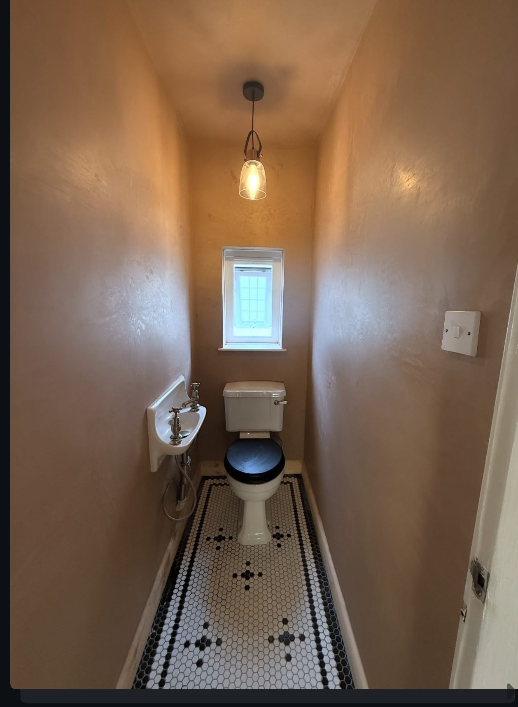
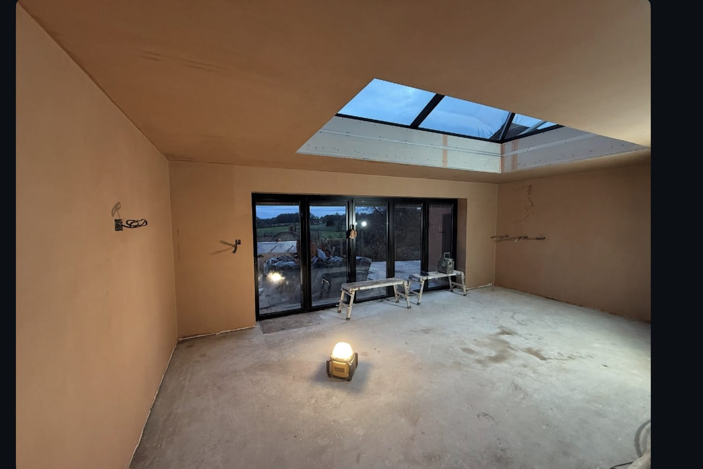
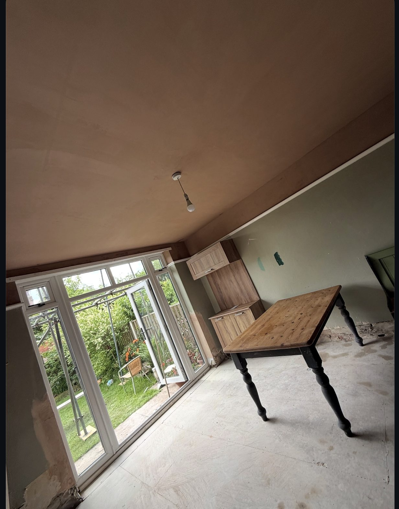
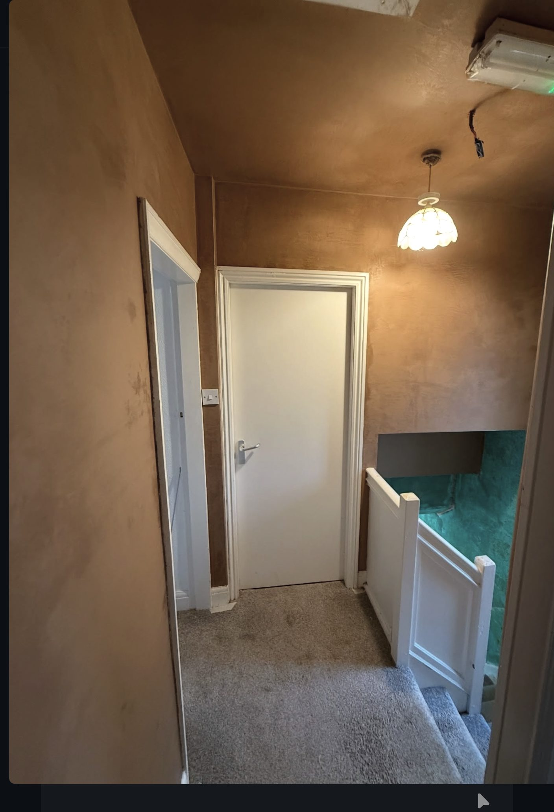
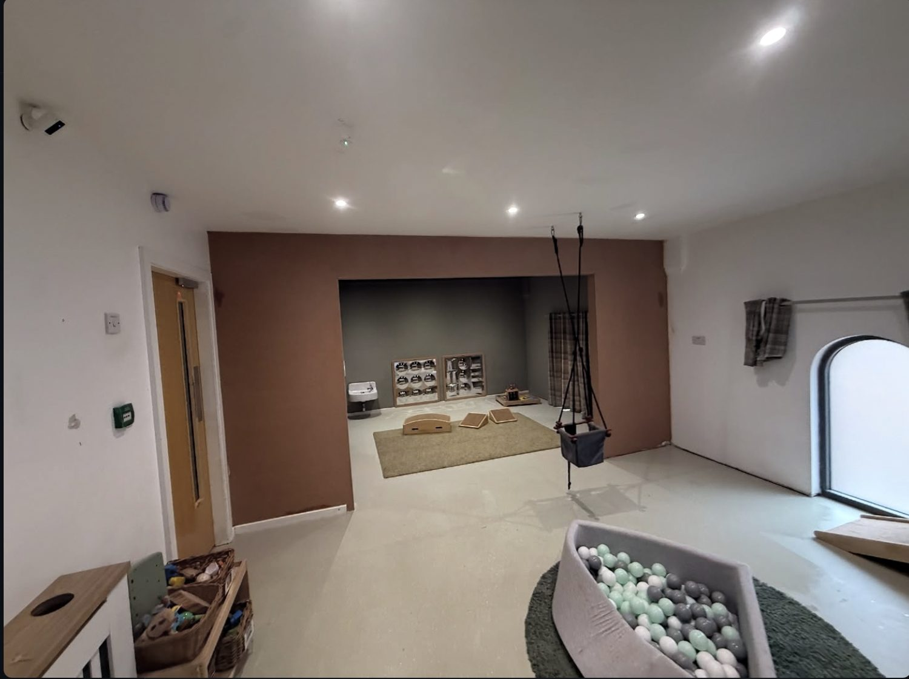
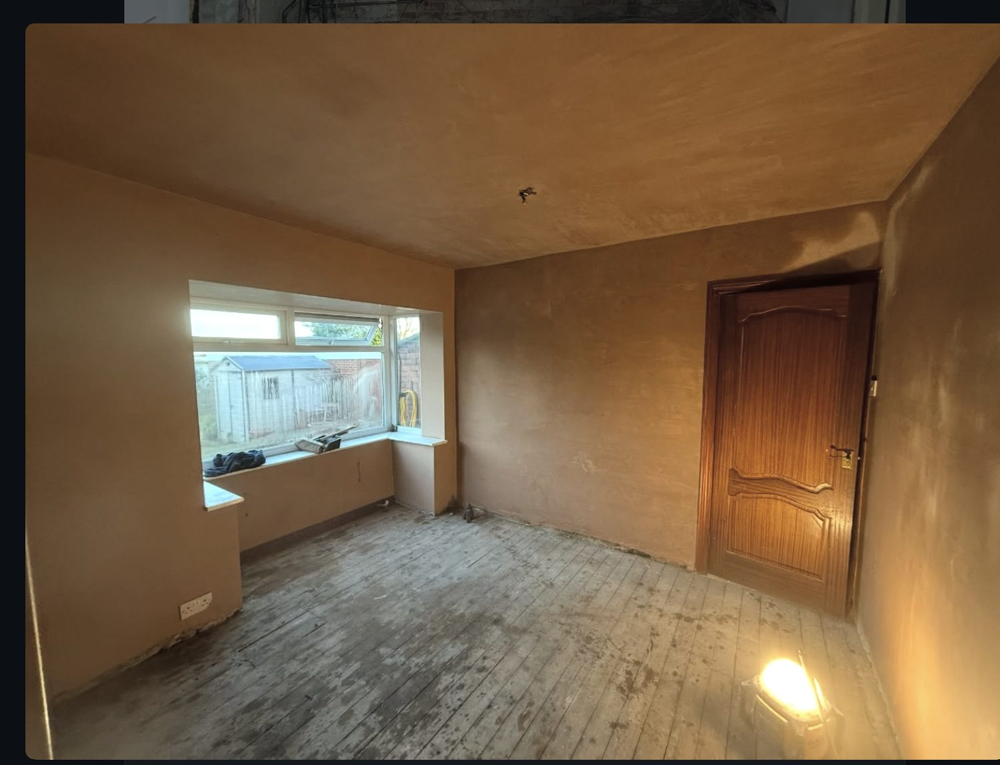
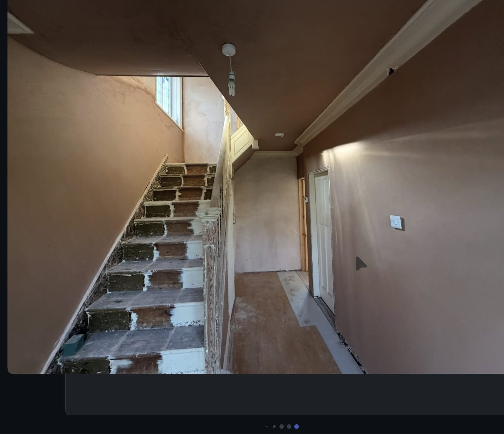
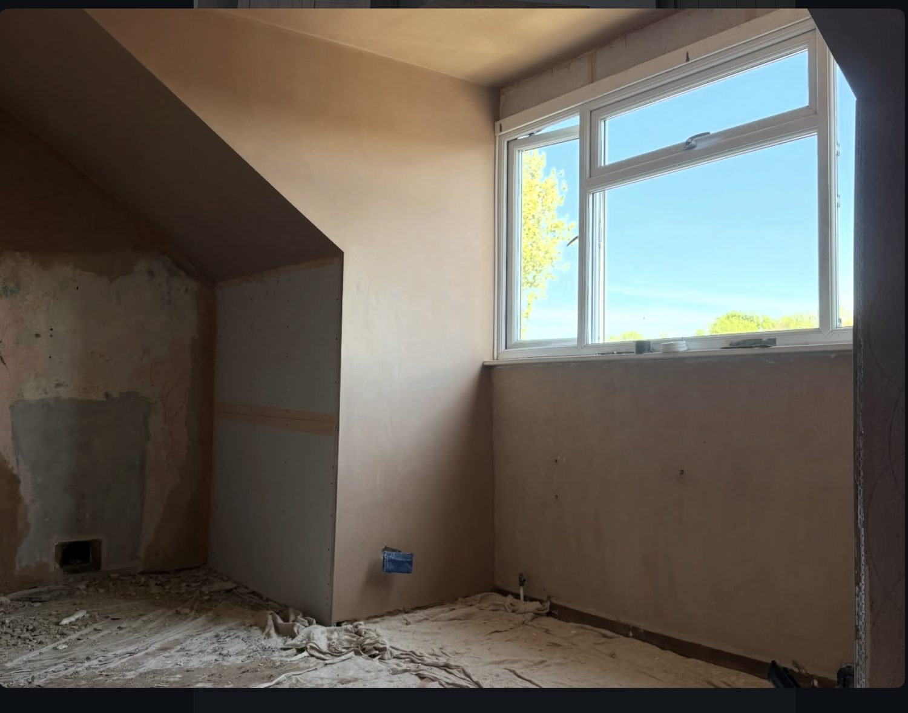
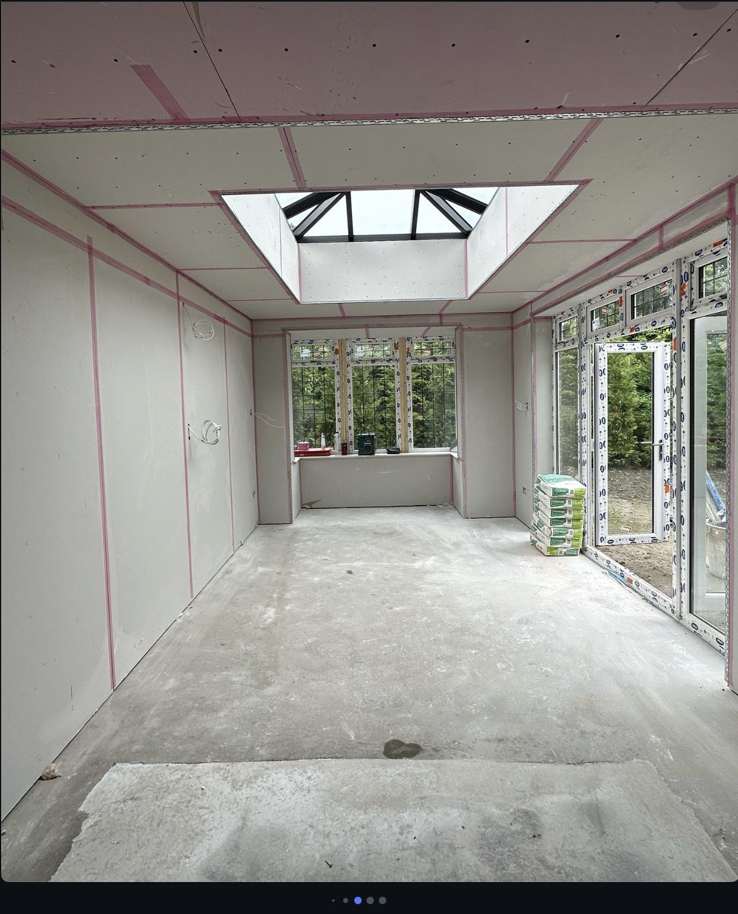

RenovationLounge re-plaster — Seacroft, Leeds

Internal PlasteringHallway & stairs — Headingley, Leeds

Re-plasterDownstairs toilet — Leeds

ExtensionExtension with skylight — Leeds
Loft / AtticAttic bedroom — Cross Gates, Leeds

CeilingsDining room — Moortown, Leeds

Internal PlasteringLanding — Headingley, Leeds

Feature WallsNursery — Morley, Leeds

RenovationDining room — Leeds

Internal PlasteringStairs & landing — Scotthall Road, Leeds

BedroomsSecond-floor bedroom — Headingley, Leeds

New BuildKitchen extension — Headingley, Leeds